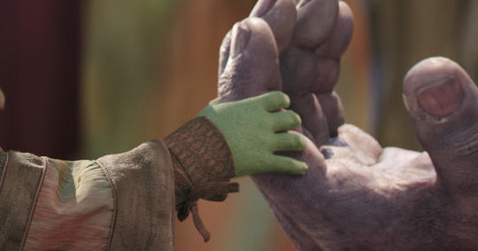

For Death’s Sake
A native of the planet Titan, Thanos saw the danger his people were in from overpopulation and suggested a severe solution—the elimination of half the population, at random and without prejudice, in order to make life better for the planet as a whole. He was shunned as a madman, but his planet did indeed eventually die, lacking the resources needed to keep up with the demands.
Firmly believing that the universe at large was in the same danger as Titan, Thanos grew to power as a force bringing death and destruction from planet to planet, with untold legions of soldiers and servants at his beck and call. Infamous for annihilating entire races in service of depopulating what he believes to be an overcrowded universe, he most often works through surrogates to achieve his goals, but has been known to take a personal hand in special circumstances.
More than once, Thanos took a child from a galactic species he’d decimated and raised them as his own. Some of these children have been tutored in the arts of assassination and war, making them among the deadliest killers imaginable. Thanos has also given powerful artifacts to individuals who he believes will use them to spread the cause of death in certain important spots among the galaxies.
